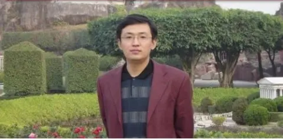
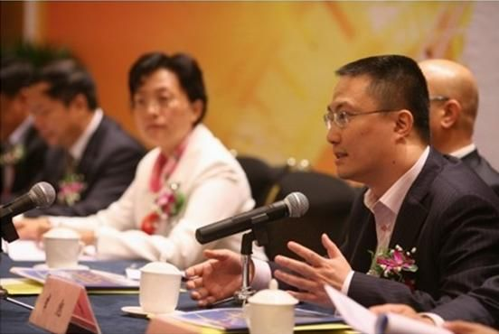
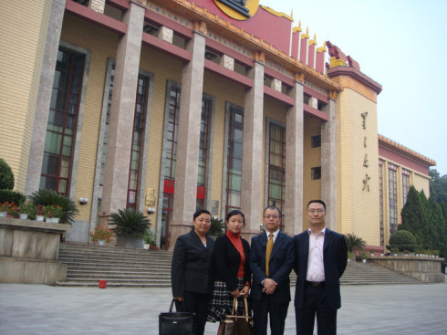
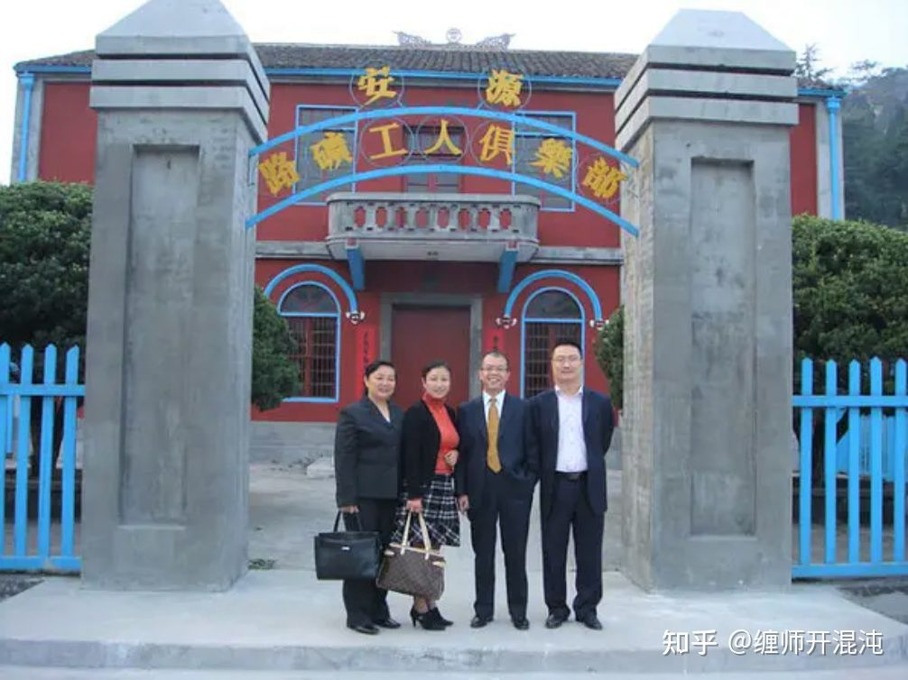
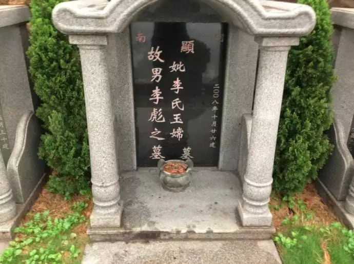
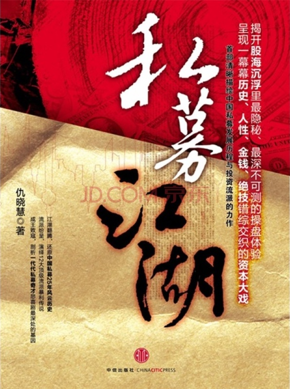

关于缠师
缠师照片





缠师生平

第四章 1999 ~ 2001年 黑金时代 （节选） 私募人物八
李彪 (已故) ：自创交易体系的通才操盘手
职务： 原青岛木子创业投资中心合伙人
出生年份： 1970年左右
出身： 操盘手
家乡： 广州
风格： 自成一派的中性交易策略，简称“缠派”。侧重市场结构、市场能量与股价轨迹等构架交易系统，且以几何语言与另类术语，如“不被面首的雏男是不完美的”等，独特呈现。
业绩： 未公开，但对市场大大小小的预测与操作都无比精准，且准确预言了2008年的熊市。亿安科技那一战，就将亿安科技从30多元抬到126元，至少获利300%。
履历： 1988年于广州广雅中学高中毕业，1988~1992年，就读于广州中山大学数学系。其后混迹于券商，1998年起，成功操盘亿安科技，造就了中国首只百元股。时隔4年后，2005年6月起重新进入股市。2006年6月7日，在新浪开博，自命为“全球第一博客”，ID为“缠中说禅”，共留下了1134篇精彩的文章。期间李彪开始做地下私募，资金以10亿元为单位计。2007年创立青岛木子创业投资中心，铺垫PE业务。2008年10月19日，因鼻咽癌导致淋巴扩散离开了这个世界。
2008年10月31日，李彪这个狂傲的资本奇人，因鼻咽癌而过早地谢幕于资本舞台，离世时还不到40岁。
在李彪的知名博客“缠中说禅”中有这么一句意味深长的话：“本ID毫不掩饰地把这些写出来，就是给所有人一个警示，生命可以用来燃烧、挥霍，但你必须承受其中的因果。没有人能例外，即始如本ID般的，也不能幸免。这是一个警示，让后来人有所畏惧。”
博文中的这句话，仿佛隐射着其凶狠坐庄亿安科技后体悟的“因果”。
有些遗憾，李彪是本书所有私募人物中，唯一一个笔者没有能一手接触的；二来，李彪是唯一一个与世人天隔一方的。然而，当你深入了解他的时候，不得不发出天妒英才的感慨。
目前，外界能找到的李彪唯一的照片是其2007年11月参加萍乡创新资本管理有限公司成立仪式时拍的。从照片上来看，李彪的脸方方的，剃着个板刷头，鼻梁上架着一副眼镜，尽管在微笑，但目光里仍凝聚着一股肃杀之气，看起来十分自信甚至自狂。不过，这张照片已经可以看出他脖子上左侧靠近后颈处有个明显的肿块。
李彪可能是最高超的职业操盘手之一，他不仅能将交易系统完美地运用到股票操作中，更是创建了一套完整的交易系统理论。众所周知，交易系统是市场中性策略交易者的基础。而市场中性策略则意味着操作者必须经过复杂的计算，才能保证自己的多头头寸和空头头寸的风险敞口相等，以胜率更高的方式进行以少积多的操盘。
创建一套完整的交易系统只是李彪众多操盘技能的一部分，他的趋势判断也十分精准。尽管趋势判断准确率较高也可能是该交易系统足够强大，但毕竟一般交易系统都是技术层面的操作，所以对于李彪而言，更大的可能性是，他对宏观经济的把握也十分卓越。他自己在博客中提到过一个细节，2006年国庆前，他与香港几个大的基金经理吃饭，结果这些基金经理被他“修理”了一通后，屁颠屁颠地回去了。其原因就是“本ID和他们说了大的国际经济趋势以及大中华区的金融前景还有内地的政治经济形势”。
另外，李彪的博客也陈列了他的股票池，其中有中粮屯河、三九医药、中牧股份、水井坊、山大华特、大众公用、紫光股份、山东海化、航天动力、澄星股份等34只股票。这些股票几乎都在2008年底行情见好后涨势凶猛。
尤其令人称道的是，李彪在几年前就神奇预言在2007年下半年，美国次贷危机将引发全球金融危机，级别堪比1929年世界金融危机；2005年，其神奇预测股市见底，马上会有波澜壮阔的大牛市；2007年神奇预测股市见大顶，甚至连具体点位都说明了，就是6124.04点。
李彪的“能耐”显然不止于此。其博客“缠中说禅”涉猎甚广，1134篇博文涉及诗词曲赋、音乐艺术、文史哲学、白话杂文等诸多领域，可谓博大精深。李彪曾表示，得其道者三人足矣。
据李彪一旧友回忆，李彪有段时间（应是1999年左右）在一券商的广州天河营业部某一大户室旁操盘，盘感极好、反应快。在这位旧友的印象中，李彪光头，眼镜后有股杀气，有点暴躁，说话很冲。有一次盘中和他通话，可能突然有人不小心洒了一杯水，他竟隔着电话破口大骂，很叫人尴尬。
圈子里传，有一年年底，杨百万（杨怀定）来广州，当时亿安科技应在40元左右，杨怀定在酒席中说，亿安科技马上要跌，很危险。后来朋友告诉李彪，李彪冷笑问，杨百万能买得起多少股亿安科技？
李彪自己分析性格时这么说：“本ID的妈妈是广州西关的，最正宗的广州人了，因为妈妈那边的亲戚都在广州，大概是南北结合，所以本ID从小就有点特别。而且，因为此，本ID从小时候开始，最远海南、大西北的，都至少住过N年以上，广州和北京就更不用说了，大概这对本ID的性格很有点影响。”
李彪仿佛是天生的杂家，他对时事、政治、娱乐、体育、人性、诗歌、物理、数学、历史、中医几乎无所不知。而他对于其中每一方面的精通程序，更是超过了一般人可以达到的境界。这不得不令人惊叹。
他的同学对李彪的印象是“天才、奇才、大师和生命的斗士、勇士”。
据广雅中学的同学回忆，李彪在数学上颇有天赋，他初二时参加了高中级别的数学竞赛，获得二等奖。他在高中入学时，就已经开始在看克莱因的《古今数学思想》。
李彪说数学是“行到水穷处，坐看云起时”的那一片心境。他在博客中写道：“本ID的理论，本质上是站在这种现代物理的角度构建自己的能量动力学结构的。这里，一切都是几何结构说了算，一切的能量动力形态，都变几何化，因此，必须有这种思维上的根本改变，才会有真正的理解。否则，还是牛顿时代那种弱智思维，将陷入一种机械化思维的陷阱中。”
他还酷爱音乐，在大学时代，他已珍藏了300多张正版音乐CD片，每张不少于100元。中学时他就已经自己作曲。他曾在博客上专门写文章详细地解释唱歌技巧。他认为，“人生苦短，如果有人的嗓子这最美妙的乐器陪伴你走过这人生之黑暗与光明，是多少美好。”
大学将毕业时，李彪报考研究生，但英文一科，他竟在考试将近结束时才赶到考场。这然，这个社会可能多了一个大学教师，而非一个纵横资本市场的大师。
不过大学时，李彪已经潜心研究股票多时，他曾有一叠股票评论稿，淡黄的纸写得满满的，但是字体清晰。这些都曾发表在报上。
中学时期的李彪完全不修边幅，一件半旧的衬衫，一条半旧带皱的西裤，手里还有一把破了的大葵花扇。多年之后，一同学在中信楼下见到他，他下巴留着胡须，显得精神而整洁，没有了学生时候的不修边幅。那时，他说自己在做股票，为会员提供分析服务。
杂家的李彪，市场路路通顶，让不少人猜测，他可能参悟了趋势投资的奥秘。
近年来，李彪在网络上非常活跃。他的ID“喜欢数学的女孩”在天涯上曾红极一时，人称“喜数女”。“喜数女”文章语言泼辣，标题刺眼，很快就把天涯论坛折腾得天翻地覆。
之后他在新浪上开了署名为“缠中说禅”的博客，语言风格改变不少，不像“喜数女”般泼辣，但是文风依然引人眼球。
在生命的最后一段时间里，除了炒股，他还投身于创投事业中。李彪先在2007年8月创立了青岛木子创投，成为青岛首家有限合伙企业，他自己担任董事长。不久，青岛木子创业投资公司参与创办了《基金分析》和《新财经》杂志。2007年11月14日，木子创投与深圳市创新投资集团公司（简称“深创投”）共同成立萍乡创新资本创业投资有限公司。
2008年7月14日他在博文中称：“病中还是有真古风的，本ID平时最怕麻烦人，但有一朋友，现在属于经济圈里最牛的人之一了，是某一最热门行业之一中国最大公司的董事长，和病中的本ID比起来，他可是春风得意马蹄疾，但这次，就真看出其真性情。”
不过，最让李彪伤心的，一个是母亲的过早离世，另一个就是与弟弟李彬的隔阂。母亲病逝，是在李彪大学期间。据同学回忆，在他妈妈患癌症去世前的一段日子，李彪开始练气功为他妈妈治病。而李彪操盘亿安科技时，其弟弟李彬却受了牵连。因为参与亿安科技操盘中的其中一个投资公司金易投资，是让李彬注册为法定代表，然而李彬其实对股票不甚了解，也从没有露面，具体负责操盘的一直是李彪。这一点法院在早先也作过披露，措辞是“李彬的胞兄李某”。“缠中说禅”也常常在博客文章中流露出对不起弟弟的心情。弟弟一直无法原谅李彪，这个一直无法解开的结，始终在内心深处折磨着他。
他在博客中写道：“2002年，本ID受过一次严重的打击，比这次严重亿万倍。这打击和经济、身体无关，而作为一个人，不经受这样打击，大概也不成为人了。所以，这打击能打击本ID，至少证明，本ID还是一个人，而且经历如此打击后，世界上已经没有任何打击可以打击本ID了。”
“在这打击下，本ID暂时放弃了一切外围的活动，包括一切的经济活动，每天素食焚香诵经，一年下来，把能找到的佛经都一字不差地反复诵了又诵，连《华严经》这样的大部头也没放过。这期间，当然不是完全不闻世事，而当时的国际经济环境已经很迫切了，看到国人仍在中国制造、中国创造中自渎，尘心又起，所以才有了开始的‘打喷嚏’，最后被人收集成《货币战争与人民币战略》以及另外一个其实更重要的文集在网上流传。
“2003年年底到2004年年中，一年期限过后，出来处理一些老事情，就没在网上活动了。2004年年中后回来，发现原来帖子被收集流传，一时童心起，才有了后面的一系列各位大概都很熟悉的活动。后来，2005年年初开始，网上也重新经济活动，一直折腾到这次病起。”
病痛的折磨，令李彪体悟到人生，但他深深地觉得自己在亲人面前的无力。
这个旷世奇才，就这样经历了一场可以用来燃烧、挥霍的生命，在因果面前，不能幸免。
李彪的“缠论”十分博大精深，如前所述，他在操盘风格上当属技术派，在二级市场圈，最知名的莫过于其首创的“跌停板洗盘吸筹法”。
李彪曾在“缠中说禅”中描写了自己操作一只股票的过程。从其描写的过程可以看出，这只股票就是当年的亿安科技。
“首先，在一个大的压力位上顶着，接了所有的解套盘……然后在那位置上不断地假突破…… 而不断地假突破，就让所有技术派的人把筹码交出来了。”
1998年10月，亿安科技一直横盘，在不断地假突破，追入的技术派股民，屡次被套。股份涨一天，跌一天，像是在走迷踪步，搞得股民晕头转向。
“这时候，把帐上所有的钱基本都打光了…… 当时，有一种透支是需要当天平仓的，用剩下的钱，借了该种透支。然后那天疯狂地买，早上就把所有的钱加透支全买完了。下午，需要平仓了。不断交涉是否可以不平，结果是不可以。很痛苦状地开始平仓行动，瀑布一样，价格下来了，早上买的，亏损着全砸了出去，结束一天悲惨的交易。价格也砸穿前面一直坚持的平台，收盘后，有人被套被人追债的传闻马上到处流传。第2天，所有的“老鼠仓”，所有知道消息的都蜂拥而出，然后是第3天，也是这样。”
1998年12月16日，市场突然传闻亿安科技的庄家因透支过度，被强行平仓。当日股价跌了4.88%，第2天跌了7.56%，第3天跌停。
极度惨烈的放量暴跌，让所有人都相信传闻是真的，庄家真的因资金链断裂被强行平仓。几乎所有的股民都后悔没有跑，但是如今股价封住跌停板，没有逃跑的机会了。
第4天依然大幅低开，但是打开跌停，大家争相出逃。如此巨大的抛盘，股份居然不跌了，这被大家理解成庄家为了出货在护盘。“这时候，在N个别处遥远的地方，所有的抛盘都被吸到一个无名的口袋里，所有出逃的人都在庆幸，因为第4天依然大幅度低开。突然，强力的买盘如同地底喷薄的熔岩，任何挂出的筹码都被一扫而光，他们已经没有任何买入的机会了。第2天，依然如此，一开盘，就迅速让任何人失去买入的机会，而前面来不及逃跑的，却依然抛着。”“缠中说禅”回忆。
连连破位下跌，被市场人士普遍理解成庄家出货末期的手法，而“缠中说禅”却反其道而行之，利用传闻和破位走势制造恐慌，大举吃货。
像他说的那样，接下来的一天，亿安科技莫名涨停，一气走出了四连阳之后，却开始横盘，而且位置略低于前期平台，就是无法突破。这又开始让人摸不着头脑。
1999年1月18日，亿安科技突然涨停，一举突破了前期两个平台。突破时，连15分钟都不到。此时，进入主升浪的亿安科技反倒没人敢追。亿安科技就这样一涨不回头。
有专业人士通过当时每日分时盘口观察分析出其股份经常是沿着45度角向上稳健攀升，并且往往以盘中高点收市。而此招就是主力以连续3个破位跌停板，让大多数筹码割肉离场，而主力利用惯常的跌停板出货法进行了反操作，大举进场。第3个跌停没封死，给前面一帮没出得了的人提供了出逃的机会。景象惨烈，几乎无人幸免。
此招也足可见李彪的聪慧与残忍。这种手法被后人总结为跌停板洗盘法，广为流传。
他的技术理论还处处散发了中性策略理念的光辉，诸如“没有庄家，有的只是赢家与输家”；他还会进行理念上的指导，诸如“有些人是不适合参与市场的”；他还会时不时地穿插一些生动的案例，诸如“逗庄家玩的一些杂史”系列。不管怎么看，在实战分析中，跌停板洗盘法仍是令人印象最为深刻的战法。 点评：无庄不欢催生第一批操盘手
“无庄不欢，无股不庄”，是这个资本时代最逼真的写照。一切故事都从1999年的“5.19”行情展开。可以说，“5.19”行情在中国资本市场上的地位无法磨灭。
这个时代，上演了太多庄家的悲喜剧，一些故事远远超出了人们的想象力。走到2001以后，监管层对股市采取的“刮骨疗伤”，以及长达4年多的漫漫熊市，让这些风光的庄家又变成了末路狂花。不过，一些幸存者一直在寻找东山再起的机会。
在20世纪90年代中后期，一些上市公司将闲置资金委托承销商进行投资，众多咨询顾问公司成私募基金操盘手，李彪、丁福根他们将这一模式发挥到了极致。
这批创意无限的庄家造就了一批同样实力非凡的操盘手，无论是市场的空间与时间都给操手手们带来了极为广阔的表演空间。中国最具传奇色彩的操盘手几乎都是在这一时期站到了历史前台：中科创业系吕梁、朱焕良、丁福根、庞博，亿安科技系罗成、郑伟、李彪、汤凡与罗中民，德隆系唐万新，银广厦系中经开（券商）等，经过这场风雨锻炼下的操盘手，如今也成了手法最高超的一群私募。诸如其后的李彪，有传闻称，他做私募时手上管理的资金规模，少说就有20亿~30亿元。
此时，市场的另一主体公募基金，随着“基金黑幕”的爆发，而开始走向规范，他们此后成了蓝筹股的主体，这一趋势同样也促进了庄家的灭亡。2001年，随着中国首只开放式基金的推出，新一批的开放式基金经理走向前台，由此，基金经理们将迎来一个黄金时代。
网上李彪点滴
资本市场如雷贯耳的名字太多，但是没有一个名字可以象缠师那样，令无数陌生人在景仰的同时发自内心的热爱与痛心。我一直希望缠师的亲朋好友为缠师写点什么，可是网上追忆缠师的文章太少，我把搜集到的一些点滴整理出来，过滤掉一些可能打扰到缠师并且未必真实的信息，希望所有尊敬缠师的人，不要指责争吵，因为这不是缠师所乐见的，此贴仅为缅怀，切勿惊忧缠师的在天之灵。
缠师的文字狂傲不羁，然而那些玩世不恭的嘻笑怒骂中，却掩不住一颗佛心，一身佛骨。缠师在化疗结束后写了这样一段文字：
“股票这么简单的东西，浪费本ID珍贵的玩乐时间，简直是罪过。本ID在医院憋屈了这么长时间，放肆几天是天经地义的，至于有人对本ID去夜总会有意见，似乎说论语的人就不应该去夜总会，这是脑子有水的想法。
大菩萨，显不同身，在鸡鸭鹅兔，一样有大菩萨在行菩萨行，谁告诉你夜总会里就没有大菩萨？以无聊的分别心去测度无边之佛法，这种人，就让他们去吧，本ID懒得管他们。”
如果真有大菩萨转世，我相信缠师一定是那个游荡在灯红酒绿中的大菩萨。缠师常常故作冷语，然而却不由自主的流露出本性中的率真纯良，他花费精力去写教程，不厌其烦的回答网友的问题，在这个奉行知者不言的市场中，缠师的热诚无私是常人无法企及的大境界。博客中的缠师绝对没有谦恭的美德，但是却从未对自己的渡人之举有过半句夸耀，缠师是这样解释写教程的原因：
“虽然理论是本ID个人发现发明的，但本ID的理念从来都是知识是全人类的，个人不应当藏着掖着，所以本ID把理论逐步公开，只是为了知识是全人类这个信念，和任何的同情或怜悯无关，因此学习得益的也不需要感谢本ID，就像你学会了平面几何，也不需要去感谢欧几里德。至于有人要千方百计去证明平面几何的错误，那也是无所谓的，这总比打麻将和傻忽忽跑到股市中亏钱强，对本ID的理论也是一样的。 ……. 说实话，站在本ID私人角度，本ID是彻底欢迎一个大的亚洲金融风暴，至少本ID这次就可以买到比现在便宜一半的房子，而且本ID一直仓位极轻，基本就是空仓，所以本ID并不介意出现一千几百点的位置，想想那时候，60元走的中铝6元买回来，病都马上要好了。但是，站在国家利益的角度，站在全民利益的角度，肯定不能这样的，而现在本ID的所为，其实是损害私人利益的，但这并不是本ID所介意的。
本ID如今在经济上早已无所求，关键是不想看到国家和国民受外国人欺负，这次大病，又有几个人原形毕露，因此与这些人的所有经济业务，都会在本ID病好后彻底了结，本ID在这边，看到这里的金融意识还很差，完全和城市本身不配套，因此有可能在私人股权投资方面点一把火，也算留点火种在这边。
如果你只能去天堂而不能下地狱，那就不要谈什么佛法了，没有十地菩萨的修行，你还当不了大魔王，连魔你都魔不了，还想成佛？磨墙去吧。”
狂傲的冷语背后，却是罕见的热心肠，缠师在入院之前，对自己有过一段恰当的评价：
“十分感谢各位的关心，人非草木，本ID当然能感受到各位的感情，毕竟，喜欢诗歌、音乐的人，本来就感情容易泛滥的。”
关于缠师的生卒日期，网上有两条广为流传的留言，可能都是误传。
误传之一： 李彪(1969?-2008),男. 1988年高中毕业于广州广雅中学. 1988-1992,广州中山大学数学系. 读过缠师博文的网友都知道，缠师17岁上大学，而缠师88年毕业于广雅中学，缠师的生日大约是 1971年8月8日
误传之二：
今天周日的同学聚会有两条令本人震惊的消息: 1,一位高中同班三年同时也是大学同校的同学于2008.10.19日因鼻咽癌导致淋巴扩散离开了这个世界.此人是中国证券史上的风云人物,也是本人心目中中国最优秀的两名操盘手之一;
因为目前唯一一篇比较详尽讲述缠师病中的博文提到最后一次见到缠师是在08年10月24日，缠师过世时，似乎处理的比较低调，曾经护理过缠师的女中医在08年11月初与亲属联系时，亲属也没有告之噩耗，广雅中学120周年庆时，同学在聚会时得知缠师过世，好象也不清楚缠师过世的确切日期，所以有了“2008.10.19”的误传，缠师创办的《基金分析》给出的日期是：2008年10月31日
更正后为： 李彪(1971.8.8-2008.10.31),男. 1988年高中毕业于广州广雅中学. 1988-1992,广州中山大学数学系.
下面是缠师用小人的ID给自己的速写：
2002-00-00 给自己来一张速写。
这里还有一个问题必须先回答，曾看到网管大人指责小人的帖子里说如今作缩头乌龟、不敢自报家门的多，现在小人就顺顺大人意，给自己来一张速写。
姓名：小人，其实真名说了你也没听过，张三李四就随便了。
婚姻：还早，就算到年龄也没兴趣，主要是出于怜悯心。试想小人这么高大威猛，一旦仅受缚于一人，其它翘首以盼者将太绝望了，为了在中国消灭自焚，不干那傻事。
情人：从地球排到织女星，当然织女不是，太老了。
爱好：除了和英文字母有关的爱好，小人在数学、物理、哲学、音乐等方面都有研究。现在正忙着把《哈姆雷特》弄成歌剧，如果有机会，让你听听小人的高音C。
平时每天练琴三小时，练唱两小时，其余时间作曲、写诗或者干其它坏事，好事基本不干。今晚有空写写有关打油诗的一些想法，如果在各方面有兴趣和小人交而不流的，可以通信。
缠师在08年7月4日的博文里写道：
“可说的东西太多，本ID的经济理论要写起来，一定比四卷本的老马《资本论》还要厚，想想，虽然本ID觉得打麻将很无聊，但好像打麻将比这有趣点。
因此，本ID已经决定，今晚以麻将庆祝周末，本ID的弟弟现在出去弄好麻将去了，理论是灰色的，让麻将之树在今晚长青。
明天安排了足球的适应性训练，所以，帖子就没有了，各位也放本ID一马，让本ID休息一天，今天这长帖子够各位啃一阵子，本ID就独自去偷欢去啦。”
随后有女球员写了这篇文字，不知是否真实：
和缠踢足球
2008，7月5日
前天我在场的，当组织者介绍说：“这一位就是样样功夫都全球第一的缠”时，我们所有在场的国家队队员全部当场被震呆了。我们都说，这个小伙咋这帅，就像画出来的人是的，唯一不同的就是站在我们面前的是一个自然而真实的美男。看着我们一起直勾勾得盯他，缠当时脸刷一下红到耳朵了，低着头，半天不敢看我们。真没想到这么厉害的人还很怕羞。
不巧的是他说身体没有完全康复，不能陪我们一起踢，只能简单练练。虽然有些遗憾，不过也是蛮高兴的。他的各方面球技都不错，跟我们的水平不相上下，就是带球时速度慢了点，可能是身体还有点虚的缘故。
晚上，他弟、我们队长几个又打了几圈麻将，打的有点大，我和队长几千元的工资几圈就光了，然后就散了。他弟也输了，印象中，就他弟赢了两把他外，其他的时间都是缠在自摸。
这两天，我们所有队员都在看缠的博客，感觉比较高深，有点不太懂。当看到有许多人叫姐啊妹啊姑啊什么之类的，我们都忍不住笑出声了。不过，说实在的，缠如果带上假长发，穿上我们的衣服去踢比赛的话，肯定会成为最漂亮的女球员。虽然前面平了点，但不会影响整体的美。
最后一篇博文中“1019前后还有什么，等着”的含义，读过这篇博文就明白了，其实指的就是缠师过世后次级贷引发的全世界的经济萧条，在此万分佩服缠师的先见之明：
请记住1987年的股灾发生在10月19日 (2008-09-18 10:26:15)
身体没有完全调整过来，但这几天市场风雨飘摇，虽然和本ID没什么关系，正乐见其跌，但还是勉强写两句，让各位心里更明白点。
奥运前，本ID提出断崖论，9月4日又就几位所谓著名经济雪茄的无聊言论给出了对经济调整的严酷性决不能掉以轻心 (2008-09-04 15:30:25) ，这些都请重温。而且反复提出，一旦美股跌破10000点将发生什么？这几天看来，那10000点已不是什么钢板。
请记住，1987年的股灾发生在10月19日，今年恰好21年的神奇数字，这也是为什么本ID对经济一直担忧的一个重要理由。短线反弹很快就有，但关键还要看外围，国内从某种程度上已经被美国所左右，这是本ID反复强调一定要避免的，结果还是没办法，天要下雨，随它去吧。
当然，就算股灾，也没什么大不了的，87年之后还不涨了20年？所以，10月见底依然有可能，只是需要更猛烈的暴跌，否则，真要等17月周期了。
短跑好的，注意很快就有的反弹，抢一口就跑。另外，密切注意世界消息面的变化，看这次老美用尽气力能搞点什么？
新浪中的回复：
新浪网友：似与博主有一面之缘。是君，酷似香港演员梁朝伟，尤其双眸—深邃，包容，安静……身材较高。各位同胞：无论他如何结果，都是在前行。特别是我等，在这段时间，在这里都有所得，所释然(包括嘘这，骂者)。此刻走出门的你我都是善良的，是佛。 (2008-10-18 11:54:00)
这篇文字是目前唯一比较详细的关于缠师的记载，只是女医生和缠师亲友都有各自的立场，彼此的成见造成的对立，场外之人无法评判，缠师在2008-04-22就被判最多还有3个月的生命，而半年后过世，应该离不开亲友的照顾，亲友不同意病危的缠师千里迢迢去北京治病也是情理之中，只是报警一事欠妥，希望大家看后站在双方各自的立场考虑后再发言：
广州之殇
2008年10月7日上午，一个朋友，也是我原来治疗过的病人，打电话邀我出诊，地点广州，患者是他非常好的朋友，被诊断为鼻咽癌，已经有一段时间了，据说瘦得只剩下皮包骨。受人所托，我的主要任务是希望能劝病人继续接受化疗，或者接受干细胞疗法。据了解，病人是一位非常有才华的年轻人，而且意志力非常顽强，已经承受过三次化疗，不过现在拒绝继续接受化疗。患者对自己的病有独到的中医见解，并对西医的治疗方法甚是排斥。若要说服患者，就必须要使出真本事才肯相信我，才会接受我的建议。出于医生的本能，我决定要去看看患者，虽然没有十全地把握，但也希望能够最大程度的缓解病人的痛苦。
10月13日下午乘坐15:10的航班，我飞往广州，落地时的广州下着瓢泼大雨，晚上8点终于到达患者的住处。走进那间“刀把型”的卧室，我第一次见到了缠。只见很小的一个人儿，裸露着身体，躺在床上，瘦弱的让人心疼。脑袋很大，颈部有着恐怖的肿块。作为一个医生我也吓了一跳，但还是决定要试一试。“你要的医生到了。”缠的表弟轻声说。缠只说: “好……”我来到进前，摸拭缠的皮肤，发现上身很热，下身却是冰凉的，中医称之为“上下不交”。缠问我情况怎样，我说：“需要先进行罐诊（拔罐子），等开完经络了解一下初步情况再看。”缠要求马上开始。在等待家属去买酒精的时间里，缠的表弟告诉我：“缠已经一周多没睡过觉，也没吃过东西了。前段时间还好一点，这段时间已经瘦成这样了。老说热，不穿衣服也不盖被子，但医生就说不发烧……” 原创；医生说禅病情分析：操盘手 李彪的最后时光？ 缠中说禅李彪。转帖讲缠的最后时光？
准备就绪，我走膀胱经布罐，大概5分钟左右，就听到了鼾声——缠睡着了。15分钟的工夫，起罐，我给缠盖上被子，缠没有拒绝。整个晚上，缠只醒了两次，是因为长时间单一睡姿导致背部僵硬，让陪护加以按摩。那一晚缠睡得比较好，而且自己要求陪护给盖被子。次日上午九点多缠醒来，我一早去看缠，脸色好看多了，脸部轮廓凸显了一些出来，脖子下的肿块小了一些，触摸起来也软了一些，右侧腋窝下的包块也变小。
上午我再次替缠布罐，这次采用轻微处理，时间和罐数均减，拔完后缠又睡了，睡得很熟很香。中午1:30，缠坐到轮椅上了，跟我讲:“姐姐，再给我拔一次罐子吧！”我说“那可不行，今天的治疗仅限于早晚的轻微处理，不能再拔了，身体承受不住。再说你现在必须大量喝水……”缠说，“没关系，试试吧！可以把晚上的那次提前嘛！”按经验判断，缠可能会伴随体温升高的症状发生，为人体自身免疫系统机能的自主反映。一般情况下，普通人多喝水第二天就没事了，只是不知道缠这种淋巴肿块的病症会出现什么样的反应。缠一再坚持，我就尝试着在肿块上布了几个罐，才两分钟就发现脸色不好，于是马上起罐，把病人身体放平，很快脸色恢复过来了。缠又睡着了，鼾声很大。我开始担心，因为喂不进水，意味着温度会上升，机体自发的免疫过程，需要大量的水在体内把经络的毒素冲刷出来，如果没有水，过程中病人会非常辛苦，免不了高热。不出所料，下午4:00后开始出现皮肤忽热忽凉，但病人依然没有醒来的意思，怎么也喂不进水。6:00左右皮肤很烫，缠醒过来，我要求立刻送病人去医院补液，缠自己也同意去医院了——这可是破天荒的。我对缠说：“你一定要坚强，只要熬过这一关你就会慢慢好起来。”
进到医院，我开始给缠大量喂水，7:00左右大便一次，多且臭，8:00左右开始补液，而且滴速控制在46滴/分钟（这是医生要求控制的）。当时病人的心率是150次左右，呼吸很大很深。一直在排气，且恶臭。9:00左右又大便一次，也非常多。整个晚上总共大便5次，都是很多很臭。我一直在喂病人加有VC和VB的水，到早上4:00，我已经喂下1300ML水，补液才进600ML。第二天白天又有三次稀大便，量都很多。体温缓慢降到38度，我才离开病房回去休息了一下。
那一天的体温很稳定，缠的精神状态也出奇的好，前一天晚上还病危了，今天就好像什么都没有发生过。白天吃了很多东西，还有牛肉羹呢……晚上缠的同学、朋友来了一屋子，我出去吃饭回来，刚跨进病房，缠很兴奋地对着那一大群人说:“我师傅回来了！”我起先没听明白，后经缠的同学翻译才懂了，原来我已经成缠的师傅了。缠的一个同学开玩笑说: “拜师要行拜师礼的，哪那么容易！”缠马上就说:“是的，是的，我还要请客呢！到时你们都得给我做证！”到此，我并没有忘记自己此行的最终任务，我当着缠众同学和朋友的面要缠答应我，等治疗一段时间后，在包块缩到最小最硬的时候去做靶细胞化疗（定位化疗，对身体健康细胞的伤害较小），缠欣然同意了。
那一夜我陪着缠到凌晨四点，缠睡了，我也在旁边合了一会儿眼。谁知道陪护在一旁敞开了病房的窗户，早上6:00我被冷醒了，坏了，我首先想到的就是已经晚了——病人肯定会染寒。果不出所料，早上8:00缠的咽喉后壁左侧开始发红了。我难过极了，要知道这样吹风受寒一般人都受不了更何况才刚通了经络的病人！
这次出诊的时间差不多了，北京的病人还在等我回去。缠北京的朋友打电话过来，可缠坚决不让我走。怎么说此行的成功或者失败呢，缠答应了继续的化疗，但要在经过我治疗一段时间，病情控制的差不多之后。我很希望缠身边的亲人或者朋友能安排缠去我那里继续调养。鉴于缠目前的状况，我又多留了一个晚上，缠希望跟我走，但身边的人都不同意，况且缠当时又受寒，身体比较虚弱。没办法，缠无论如何要求我再拔一次罐，否则就不留在医院里。就这样，我最后替缠作了一次治疗，10月17日早六点，径自去了机场，回京…… 六天之后，10月23日上午10点左右缠的朋友（也是我的朋友）打电话说缠邀请我再赴广州，自上次我离开后缠一直不肯吃东西，甚至连水都不喝，身体已经衰竭。定好下午5点的机票，于是我再次出诊。到达广州已经是晚上8点50分，我直奔缠所在的医院，进到病房，我说:“缠，我到了。”当时的缠还清醒，听到我的声音，笑得像孩子似的。 “太好了！”缠说。看到缠的神情，我心里不知是什么滋味。放下手中的行李，将事先准备好的VC和VB拿给缠吃，主要是想尽快保护一下肝脏，看能否解决一些进食问题。皇天不负有心人，晚上11点左右，缠告诉我感觉饿了，想吃点东西，吃什么呢？手头有婴儿米粉、蛋白粉，于是我用少量的米粉加蛋白粉，先用温开水调到很稠，再加现榨的葡萄汁，然后再次兑水，弄稀到可以用吸管吸食。缠喝了一点就出现呛咳，说明咽喉已经肿胀，很难咽下东西。我很着急，不知道该用什么样的方法让缠可以放松一下喉咙。于是我轻轻地给缠按摩喉咙，稍微好一些，但还是怕吃下去再次呛咳，于是决定明天再喂。就这样在深夜两点以前缠喝下果汁、含VC、VB和Ca的流质共600ML，还有少量的米粉和蛋白粉。 第二天早8点半，我准时到病房，缠的陪护老陈告诉我他刚喂缠吃过200ML水和大半杯酸奶。我高兴坏了。缠坚持要出院，跟我回北京继续治疗。可是当把这事跟姨父姨母和老陈说之后，姨父姨母要求我承诺治疗效果，我说“阿姨，缠可是鼻咽癌，且伴随严重的淋巴系统增生，医院医生都不可能给你任何承诺，为什么要我给你承诺呢？！我能做的就是尽一个医者最大的努力，如果他好了，就是佛家说的是他的福报，如果好不了，也只能认命了。再说，如果继续治疗，我需要跟病人和家属签署基本的免责协议。”这时姨母说:“刘医生，我也希望缠好起来，但我不是缠的直系亲属，我怎么能跟你签合约啊！”这时陪护老陈像精神病一样在病房里一边骂介绍我来的缠的朋友，一边骂我，说我是什么用意，为什么一定要把缠带到北京去。我看看缠，缠无奈，叫我别生气，别听他们的，还一定要跟我回去，说:“你带我走吧。我们走吧！走吧！”语气急切而且内心焦灼。我对缠身边的人说:“你们怎么不问问病人自己呢！不是我要带缠走，是缠要跟我走……”缠见我发火了，在那里不吱声。另外一个姓黄朋友把我们全部叫到病房外面去: “大家都别争了，最主要的还是看缠怎么决定吧。”老陈见此情况就缓和了，说:“要不这样吧，缠不是要出院吗？我们干脆把缠接回家，你就留下来，可以在家里做治疗。”缠开始还是不同意，要随我去北京。于是我对缠说:“缠，他们让我留下来替你做治疗，行吗？”缠随即答应了。
这两次的出诊，我都甩下了北京的店和客人，考虑到缠的治疗时间大概要一个月，我必须事先与病人和病人家属谈妥治疗费的事情。试算一下，北京店面月租3500，目前疗程内客人数量大概在20，按每日最多4位病人治疗，每人每次治疗花费1000元，而在这里是全天几乎要24小时的进行治疗及陪护，于是我提出广州这边按4000元/天作为治疗费的标准，先与他们商量。一会儿，老陈很高兴的样子来告诉我: “我已经跟缠说了，缠同意了，只是姨父他们觉得有点贵，等会儿缠就会叫你进去的。”过了一会儿，他们让我进病房，我看到周围人的表情是如此不自然。唯独缠很高兴的说:“刘医生，对不起，刚才让您受委屈了，您要早说的话，我可能就不遭这份罪了。您说的四千元治疗费吧，没关系，我们就这么定了，照您说的办，您留下来帮帮我。”话已经说到这个份儿上，我只有暂时留下来了。为了缠，一个才华横溢的年轻人，我愿意试一试，但同样，我没有十全的把握说能够医好缠的病……
我的无奈和无助
当日，所有的人在晚上7点前就都离开病房了，只留下我在病房里陪着缠，缠又在发高烧了，到39度5，我给缠拔罐、刮痧、用药水泡手泡脚，翻身，用药水擦澡……，榨果汁，喂食物、喂水，所有的事情都只有我一个人。于是我打电话问缠的姨父: “大叔，你们请我过来好像成了全程陪护了，我这算什么呀？现在缠体温一直持续在39度5，万一在医院里有个三长两短我怎么交代呀？”他告诉我，他马上打电话给那个陪护老陈回来，可是他也一整夜没有回来，第二天早7点40才回到病房。缠持续高热，又不吃药，医生用了镇静退热剂，也都退不下来，缠的神智已经不是很清醒了，一会儿说看到谁来了，让我把门打开，一会儿又说股票怎样怎样，还说台币又怎样……我一晚上都在听缠的呓语，心里很不是滋味啊。早上6：30了，我看缠睡着了，我也睡一会儿，7：00缠又醒过来了，就叫着要出院。没办法，我只好打电话告诉姨父和老陈，让他们早点来，看看是否可以转院，这里的医生告诉我，他们这里只能这样了，是内科病房，不是癌症专科病房，所有的药对缠都没有用了。早上8:10左右，缠说想吃点东西，我就调早餐，突然两个警察来了，他们先是问这个病人是不是叫XX ，我说是，然后问我和病人什么关系，我说是病人的朋友推荐我来替病人做治疗的，又问病人家属在哪里？我回答病人家属还没到。在这种情况下，我反问了警察一句:“有什么事吗？”警察说:“有人从深圳打电话来说有人诈骗XX。”那时我就明白什么意思了，无奈的苦笑，打电话给推荐我来的人说，这里关系太复杂，没办法再待下去，还是尽快回去吧。警察最后没有问什么，只记录了我的姓名、出生年月日就走了。（直到离开广州，除去来程时的机票1600元和这两天的食宿，我没有向病人索要一分钱的治疗费用。）
无论去留与否，我还是坚持为缠做最后的努力。回到病房，我把调好的餐喂缠吃下去了。截止到10月24日，缠几乎9天没有大便了，目前正处高热，我找到医生要求给病人做盐水灌肠，医生说，“病人都没有吃东西，不会有大便。”我说，上次我拔完罐之后病人解了8次大便后第二天体温不是就下来了吗？我坚持让医生试试，于是他们给了我两只开塞露，我让陪护上药，陪护说这不是医生的医嘱，拒绝做。那好，我自己做，上好药几分钟后，病人就开始解大便了，而且量很多。这里我想说明一下: 中医讲肺与大肠相表里，主皮毛。缠体温持续高热，任何药物都没效果，那肯定是大肠有严重阻塞，导致肺气不宣；再说我还摸到缠的腹部有大的包块，碰到就疼，质地较硬，我判断那就是宿便；还有缠在我上次离开之前和这两天还有吃东西，前面我喂过牛肉羹之类的半流质食物、牛奶、玉米浆之类的流质。前一次高烧也是大便一出来、水喂进去，体温就降下来，所以病人应该有较多宿便淤积在体内形成毒素而无法排出。 也同样考虑到毒素的大量淤积，我要求让医生上血液透析，因为我认为缠的淋巴包块小了那么多，它的毒素去了哪里？首先是进入血液进行代谢，但病人身体极差，代谢绝对有困难，再说每天2000ML的尿液也不能很快的排出体内的毒素，如果用血液透析就可以很快帮助病人过滤血液里的毒素，继而使淋巴系统和血液系统尽快参与代谢，循环起来，这样免疫系统才会慢慢恢复和增强，才能把癌细胞逐渐包起来，直到最后按预期缩小到一定程度足以进行靶细胞定位化疗。于是我找主管医生要求给病人做血液透析，医生告诉我病人指标不够，说病人现在每天能有2000ML小便没必要做血透，还强调说血透必须要满足两个条件：一个是肾脏失去过滤功能，再一个就是急性中毒。医生说怀疑是淋巴肿块破溃，大量毒素进入血系统引起的高热，没法降温，于是我反问了医生一句话:“大量毒素入血，这不称为急性中毒又叫什么？！”那医生“咆哮”道: “那我去找肾科的让他们做血透？！这不可能！”……
下午1点半我回到病房，老陈说肿瘤医院床位满了，没有空房间，需要等。我向他们辞行: “我在这里插不上手，帮不上什么忙，现在缠拜托给你们了。”见到我主动要求离开，老陈马上就说好好好，马上就打电话给我定机票。我进到病房和缠说:“现在转不了院，我在这里帮不上什么忙，干脆我先回北京……”话还没讲完，缠立刻很激动地说:“我也走，你带我走，我要跟你一起走！” “缠，我怎么带得动你？！我背你不动你啊！”“我不要你背我，有车的嘛。还有我姨父、姨母、老陈他们。”我说“缠，现在你温度这么高，他们不许你离开医院的，你就等温度降下来再来北京好吗？”“我们说好了你怎么又变了呢？”缠说得很绝望，紧紧握着我的手不放我。我难过极了，可我没敢哭，只是鼓励缠:“你一定要坚强一点，挺过去，我在北京等着你！”缠只是闭上眼睛说好好好，声音低沉的，突然大声说:“我一定要过来，我后天就过来！”我说“好，我一定去接你。”“你是坐火车还是坐飞机呀？”我开玩笑说，“我看到哪儿接你嘛！”缠说:“我怎么坐得了飞机，只能坐火车了。”我说“好，我一定去火车站接你”……
我的心灵洗礼
带着遗憾和不忍，我回到了北京的家，感觉非常非常的疲倦，在家整整睡了两天。也许是心情的原因，也许是身体的乏力至极。当“珈”到我这里，我对她说: “这次我最大的收获就是接受了一次心灵的洗礼……一直以来，只要病人不放弃，我就不放弃，可此刻我不得不对缠说抱歉，阻碍重重，也许是天意，我没办法再进行下去……”难过的眼泪忍不住一下涌上眼眶，“珈”也陪着我一起痛痛快快地哭了一场。最后我不无感叹地说：“是啊：人一生有一个真正的好朋友是如此重要，在最关键时刻就是自己的生命！同时也是自己的一场人生啊！这是我从来就是忽略了的，但现在看来却是非常珍贵的东西，这是再多钱都买不到的呀！”
回复留言(2008-11-02 23:33:29)
谢谢大家的留言！有这么多人在关心缠爱着缠，我真的很开心！可是对于大家焦灼的等待和急切的心情我也有，这种切肤之痛一直深深的缠着我！其实我比你们更着急，作为医者，当以救人为天职，可是在广州，我没有力量：1、我不能让医生听我的，连一个解决大便的方便都不提供，你想还有其他吗？！2、病人现在卧病在床，连吃喝拉撒睡完全都需要人照料，缠已经瘦得像一个小孩一样，只有70斤左右了。3、陪护缠的人有好几个，可都不是缠的直系亲属，缠的一切都是由缠的陪伴老陈说了算，这个人是缠多年的朋友。4、缠是广州人，虽一直生活在北京，可生病后住医院得要直系亲属签字，可缠的亲人都在广州，所以缠是迫不得已被朋友们送回去的。5、如果我让缠来北京，缠身边的老陈不同意，再说缠的姨母要我做出治好缠的承诺，就是普通病人我纵然有100%的把握也不会答应他，更何况缠得的是这种重病。6、去之前我就告诉缠的朋友和亲人，医生看病给钱天经地义，俗话说破财消灾嘛，可等我到了广州说到钱的时候就变调了。我倒不是跟缠计较，而是缠身边的障碍太高了，我的手够不着。我在广州一切费用都是我先垫着在花呢。如果轮到我们常人看病请医生是这样的吗？更何况，说实话，我不是在这里说一句大话，照缠的目标他请的医生是一般的医生吗？！所以我把这次广州之行写出来，确实是希望众多缠友都能来帮帮缠。缠虽然没有能力打字，但缠的表弟可以帮缠打开博客的。我有什么话也都只有通过缠的博客留言转给缠。至于负面的评论我不想去理会。
再回复留言(2008-11-03 10:22:44)
其实不只是缠迷着急，缠的朋友们都着急，可以用心急如焚来形容，可他们又能做什么呢？他们到处为缠求医问药希望缠能尽快康复，包括我去都是为了说服缠做化疗。缠答应我做化疗了，但缠目前的身体是不能接受化疗的，太弱了，一旦化疗很可能把自己的生命给搭进去，所以缠拒绝化疗，希望用一些物理疗法能帮缠把身体调养一段时间，如果有足够的承受力的时候再去做化疗不就没有什么问题了吗？所以我只是用物理的方法（如：营养疗法、经络疗法）想把缠的身体调出来，再让缠接受化疗，缠欣然同意而且配合非常好。可谁知道刚见到效果就遭到如此强烈的阻拦呢？我是医者，深深知道自己肩上的责任，可我们得认知法律的严肃性，我从不在自己的专业上与谁开玩笑，但我也是一个有血有肉的人，在法律许可的范围内我愿意为病人做一切有利于病人康复的工作，我认为这是我的职业责任所在，只是在模糊的边缘我还是需要小心，这点我相信任何人都会原谅我。在此我感谢所有关心缠健康的朋友们为我提出的邀请，但是也请大家都来出出主意，众人的力量是无穷大的！我本人愿意与大家一道共同来拯救这个旷世奇才！ 回复评论(2008-11-03 14:54:44)
现在缠的身体很差，刚才我与缠的表弟通过电话，告知了一个十足缠迷提供的中医配方，我让他们尽快去处理。如果有必要，先征得缠身边的人和缠本人同意，到时请这位老太医直接去看缠。至于很多缠迷提到金钱的问题，希望大家不要有任何的误解：医家看病收钱，病家破财免灾。我不缺钱，目前还不需要这种莫名的帮助。有钱的朋友，我倒是希望能多做一些社会捐助，为社会多做些贡献，好积福积报。佛家讲“病医有缘人”嘛！你们的心情我是理解的。只是我想告诉大家的是：缠有好多好多的朋友，也有太多太多的网友，还有缠身边的人，我是在缠的病床前缠亲自点击自己的博客给我看的，当时在场的人有同学、有朋友、还有缠的姨父、表弟，当时我只看了缠博客的前三篇对股票分析的文章。迄今为止，其余的我只看过缠的一篇诗词，那是我的朋友当然也是缠的朋友点给我看的，因为我本人对网络还不是很在行.
新浪网友2008-11-03 17:36:07 [举报]
各位缠友们,大家好! 我想在这里简单地谈谈我的几点看法:第一,关于备受广大缠迷所关心热爱的数女究竟是男是女,我认为这并不重要,真正关心她(他)的人是不在乎这点的,试问:“你是欣赏他(她)的才华还是更关注她(他)的性别呢?”;第二,我可以坦然地告诉大家,你们心目中的缠姐姐已经出门云游四海去了,估计今后很难再看到他(她)发的精湛的文章了;第三,我觉得有必要申明一下,那个自称“姐姐“的开博的女中医的确给缠诊疗过,这一点请大家就不必再费心思去猜忌了,免得将缠的这一片净土弄的乌烟瘴气的,我想这绝不是缠所希望看到的.最后,让我们大家一起来为缠祝福吧!
新浪网友2008-11-03 17:36:07 是目前看到的第一个证实缠师仙去的留言，随后又出现下面的祭文：
叶儿：度了四方人物，怎堪己途坎坷，世间本无善，何必惹尘埃。世途本征途，市场即战场，生者气奄奄，死者长已矣。天下熙熙，皆为利来；天下壤壤，皆为利往；利尽人散，利空人去。呜呼，哀哉。
无题洒泪祭禅
2008-11-16，缠师的博客中有人以刷屏的方式告之缠师仙去的消息，可惜没有人细问，只是招来一片怒骂：
新浪网友2008-11-16 09:54:24 [举报]
缠是男士，已于2008年10月31日去世，告知缠迷，不要再打扰他了，愿逝者安息
缠是男士，已于2008年10月31日去世，告知缠迷，不要再打扰他了，愿逝者安息
缠是男士，已于2008年10月31日去世，告知缠迷，不要再打扰他了，愿逝者安息
缠是男士，已于2008年10月31日去世，告知缠迷，不要再打扰他了，愿逝者安息
缠是男士，已于2008年10月31日去世，告知缠迷，不要再打扰他了，愿逝者安息
缠是男士，已于2008年10月31日去世，告知缠迷，不要再打扰他了，愿逝者安息
缠是男士，已于2008年10月31日去世，告知缠迷，不要再打扰他了，愿逝者安息
缠是男士，已于2008年10月31日去世，告知缠迷，不要再打扰他了，愿逝者安息
缠是男士，已于2008年10月31日去世，告知缠迷，不要再打扰他了，愿逝者安息
缠是男士，已于2008年10月31日去世，告知缠迷，不要再打扰他了，愿逝者安息
缠是男士，已于2008年10月31日去世，告知缠迷，不要再打扰他了，愿逝者安息
缠是男士，已于2008年10月31日去世，告知缠迷，不要再打扰他了，愿逝者安息
缠是男士，已于2008年10月31日去世，告知缠迷，不要再打扰他了，愿逝者安息
缠是男士，已于2008年10月31日去世，告知缠迷，不要再打扰他了，愿逝者安息
缠是男士，已于2008年10月31日去世，告知缠迷，不要再打扰他了，愿逝者安息
缠是男士，已于2008年10月31日去世，告知缠迷，不要再打扰他了，愿逝者安息
缠是男士，已于2008年10月31日去世，告知缠迷，不要再打扰他了，愿逝者安息
缠是男士，已于2008年10月31日去世，告知缠迷，不要再打扰他了，愿逝者安息
缠是男士，已于2008年10月31日去世，告知缠迷，不要再打扰他了，愿逝者安息
缠是男士，已于2008年10月31日去世，告知缠迷，不要再打扰他了，愿逝者安息
新浪网友2008-11-16 09:57:21 [举报]
缠是男士，已于2008年10月31日去世，告知缠迷，不要再打扰他了，愿逝者安息
缠是男士，已于2008年10月31日去世，告知缠迷，不要再打扰他了，愿逝者安息
缠是男士，已于2008年10月31日去世，告知缠迷，不要再打扰他了，愿逝者安息
缠是男士，已于2008年10月31日去世，告知缠迷，不要再打扰他了，愿逝者安息
缠是男士，已于2008年10月31日去世，告知缠迷，不要再打扰他了，愿逝者安息
缠是男士，已于2008年10月31日去世，告知缠迷，不要再打扰他了，愿逝者安息
缠是男士，已于2008年10月31日去世，告知缠迷，不要再打扰他了，愿逝者安息
缠是男士，已于2008年10月31日去世，告知缠迷，不要再打扰他了，愿逝者安息
缠是男士，已于2008年10月31日去世，告知缠迷，不要再打扰他了，愿逝者安息
缠是男士，已于2008年10月31日去世，告知缠迷，不要再打扰他了，愿逝者安息
缠是男士，已于2008年10月31日去世，告知缠迷，不要再打扰他了，愿逝者安息
缠是男士，已于2008年10月31日去世，告知缠迷，不要再打扰他了，愿逝者安息
缠是男士，已于2008年10月31日去世，告知缠迷，不要再打扰他了，愿逝者安息
缠是男士，已于2008年10月31日去世，告知缠迷，不要再打扰他了，愿逝者安息
缠是男士，已于2008年10月31日去世，告知缠迷，不要再打扰他了，愿逝者安息
缠是男士，已于2008年10月31日去世，告知缠迷，不要再打扰他了，愿逝者安息
缠是男士，已于2008年10月31日去世，告知缠迷，不要再打扰他了，愿逝者安息
缠是男士，已于2008年10月31日去世，告知缠迷，不要再打扰他了，愿逝者安息
缠是男士，已于2008年10月31日去世，告知缠迷，不要再打扰他了，愿逝者安息
缠是男士，已于2008年10月31日去世，告知缠迷，不要再打扰他了，愿逝者安息
缠是男士，已于2008年10月31日去世，告知缠迷，不要再打扰他了，愿逝者安息
缠是男士，已于2008年10月31日去世，告知缠迷，不要再打扰他了，愿逝者安息
缠是男士，已于2008年10月31日去世，告知缠迷，不要再打扰他了，愿逝者安息
新浪网友2008-11-17 15:04:06 [举报]
他已经走了。大家都节哀。都好好活着，人生不容易！
知情人的留言：
告知2008-11-17 15:33:29 [举报]
现公告：主已去！各位自重！ [悲伤]
新浪网友2008-11-20 08:32:56 [举报]
笨笨求学
3.你那个白话解经,是你认为好,你想,你认为的还能大过你的井口吗?
(2008-11-20 01:26:43)
笨笨不笨
(2008-11-20 08:27:43)
===========================意识是可以超越其自身所在的空间的,否则大家怎么都能感受到小缠的爱呢?
新浪网友2008-11-20 08:33:53 [举报]
两个月前，他告诉我他的这个博客，我看过几次。物是人非了，这里还这么热闹，是我没有想到的。
新浪网友2008-11-20 08:39:47 [举报]
不同层次的人，禅姐，你属于那种人呢？世界每天都在变，但不变的是我们想念你的心。禅，好好地。不管你在哪里，我们永远支持你。我思故我在！
(2008-11-19 17:33:42)
是禅师，非禅姐！这是善意的告诉你，你可他称其师，而非姐！
新浪网友2008-11-20 08:47:05 [举报]
新浪网友新浪网友新浪网友 是否物质和大小无关
========
请举例说明！
==================
爱,你感觉很深很大,无边,可是能说是物质吗?但是对受体来说,却实实在在.
(2008-11-20 08:27:29)
======================
这个说法是已经被修正过的唯物论，我能接受，但这里的人很多可不是接受的这个教育哦，能接受爱是物质吗？另一面讲，这里有台电脑，张三李四王五都能看到，都知道这是物质，但假设你对张三有爱，张三能感受到，李四王五能感受到吗？未必。
================================================
我觉得首先是要先定好“不患“,即物质的定义,才有可能继续讨论.
如果说存在就是物质的话,爱就是物质了,感受得到与否,并不妨碍其存在.
如果就用列宁的定义,那么爱就不是物质了.
新浪网友2008-11-20 08:51:08 [举报]
新浪网友对,意识还可以脱离原有,存在于其他载体上
(2008-11-20 08:39:18)
物质，意识（在佛法里，也是四大种所造）的第一性问题是区分唯心和唯物的标准。
诸法空性，唯心和唯物皆不是究竟
新浪网友2008-11-20 08:56:10 [举报]
如果是说写这博的小缠,那么她在我心中,就是一个最女人的女人!
(2008-11-20 08:50:41)
呵呵，你若看到他的样子，可能就会为自己的这个想法吓到，呵呵，你就认为他是女人好了，我还有个会，下了。
fatfat10082008-12-02 15:54:05 [举报]
广雅88的一代天才，太遗憾了。。。
新浪网友2008-12-02 16:45:44 [举报]
从我内心来讲
我从来就没有过传播什么流言的念头
这是我无愧的
新浪网友2008-12-02 16:56:26 [举报]
我在这里的话，加起来都能数的清楚
在没有看到博主内心深处的善意和宽容之前，我了解她的思想已经很多了
前面的《和缠踢足球》感觉有些疑问，看了一些缠师的照片，健壮威武，与文中形象不符，存疑。
广雅中学习120年校庆，同学聚会中得知缠师仙去，下面是同学追忆缠师的文字，其中生卒日期可能有误，前面已经说过了：
缅怀（转–作者：摸根死担力） (2008-12-01 20:21:34)
标签：杂谈
升升跌跌股海翻腾
阳阳阴阴天地回荡
––缅怀李彪同学
李彪(1969?-2008),男.
1988年高中毕业于广州广雅中学.
1988-1992,广州中山大学数学系.
私事篇:哀伤
今天周日的同学聚会有两条令本人震惊的消息:
1,一位高中同班三年同时也是大学同校的同学于2008.10.19日因鼻咽癌导致淋巴扩散离开了这个世界.此人是中国证券史上的风云人物,也是本人心目中中国最优秀的两名操盘手之一;
2,此人在新浪全球第一博客开设了接近2年的博客专栏,书写了近1400篇以上的博文,流量排行占据新浪第38位,本人今晚才开始查看他的博客历史记录…… 愿上帝怜悯和眷顾他的灵魂.
心情极其压抑不想多说别的,仅以该同学的一篇博文表述哀悼之情.
北大可能是他2000后在北京进修音乐时修读的,当时冼星海的徒弟是彪的导师.估计读的是文学
#追思一代奇才李彪同学（之一）
在活动的最后一刻听到“李彪同学不幸离世”的消息，所有人都为之悲伤，我们一桌的女生们，泪虽强忍住了，但眼圈殷红。
今天是星期五，从这周一到今天为止，我的绝大多数时间都泡在李彪同学的博客——缠中说禅上了。我不断地读，不断地读，收获不少感悟。本人只是凡人一个，渺小得很，但斗胆如此评论李彪同学——
他是天才、奇才、大师和生命的斗士、勇士。我相信，他肉身虽死，但精神永存！他用他其高的智慧，用最真诚的态度，毫无恐惧地面对生死，体验生命过程，最后，他穿越了生命，我相信，他得到了永生，让黑夜增添了一抹闪耀的亮光。读他的文章，我获得的直面生命的勇气。
几天来一直一直在读，很奇怪，心里没有了悲伤，好像自己在他宽广博大的思想海洋里瓢水止渴，甘甜直沁心脾。
我希望，能在这个论坛中，开辟小小的空间，大家用往事来追思这位奇才。
新浪网友2009-01-17 19:10:09 [举报]
追思一代奇才李彪同学（之二）
李彪同学是数学奇才，这是大家都知道的。记得他初二时候参加了高中(应该是高二)级别的数学全国竞赛，获得二等奖，可见他的IQ之高。高三临毕业时候，他丝毫没有高考的紧张，有时还和和鄙人讨论一些与考试无关的数学难题。虽然说讨论，我也只是看他做而已，他是处于曲高和寡，想找个听众。
大学毕业不久，有幸去过他家，可以说是简陋的家，但是他带我看了他珍藏的音乐CD片，告诉我，那些全是正版的碟。每张不少于100元，共有300多片，还有一个钢琴……，可见他对理想的追求是那么投入，那么常执着。斯是陋室，唯其德馨。然后给我看了他的一叠股票评论稿。淡黄的纸写得满满的，但是字体清晰。记得其中有评论“….第几浪…..“,。他告诉我，这些都发表在报上的。可是，到目前，看到报纸上类似的股评，我还看不懂。
最后一次见他是在中信楼下，他下巴留着胡须，显得精神而整洁，没有学生时候的不修边幅。说他在做股票，为会员提供分析服务……
我是机缘巧合，比大家早大半天知道李彪同学去世的消息的。心情一直很低落，睡觉时候到凌晨竟然醒了，然后睡不着，一直想着李彪的事，这样过了几个小时。
简单的回忆，以怀念李彪同学！
新浪网友2009-01-17 19:11:00 [举报]
追思一代奇才李彪同学（之三）
李彪与我在大学期间还算有些交往。特别在他妈妈患癌去世前的一段日子，李彪开始练气功为他妈妈治病，我也曾为他联络一些气功学校的老师。李彪的一片孝心是令人感动的。而丧失至亲的悲痛我只能在几年后才切身体会得到。
大学毕业时，李彪报考研究生，但英文一科，他竟在考试将近结束才赶到考场。不然，这个社会可能只多了一个大学教师，而非一个纵横资本市场的大师。
李彪在大学期间不断作曲，由于这个天才本身演奏的功力实在麻麻（相信有不少同学对受他小提琴“杀鸡”之苦还有记忆），当时也没有电脑MIDI制作之类的东西（MIDI部份的技术支持后一度由彭俊华提供），他竟找内人（当时还是我女朋友）弹奏以听效果，且是直接跟上家去，并不知会本人。以内人有限的能力，当时这些乐谱，有并非凡人可弹的感觉。至今，我家in-laws对这个奇人还有印象。
李彪去世的消息让人扼腕叹息，我一有时间也读读他的缠文，读到他在2005年对今天金融海啸的准确预言，深表叹服。也不禁有些怀疑大师是否泄露了过多天机而有损阳寿，希望他是牺牲自己而渡人无数。
追思一代奇才李彪同学（之四）
本次活动，最深的印象莫过于李彪同学了，虽然他没有来，永远也不能来了．
第一天下午，在人手一份的问卷上，在那个最挂念的老师／同学问题下，我写了李彪的名字．没有想到，第二天下午，就听到了关于他的消息．感觉非常复杂．
高中入学第一个认识的人，也是李彪，当我在课堂上，还在数学老师严厉的目光下发抖时，他在看《古今数学思想》，并告诉我有一个人叫做柏拉图。我开始觉得，有些事情是需要花些时间去认真想想的。但这并没有阻止我加入讥笑他的歌声和小提琴声的行列中，虽然他一点也不在意，虽然我也不是太明白音乐应该是怎么样的，但我总认为这样是搞不出什么象样的东西的。
工作后几年，又见到了李彪，他写的乐谱已经很厚了。我找了一个懂音乐的人（我的新婚妻子）去和他谈一下，他的办公室里椅子不多，我可以叠起他的一部分乐谱放在地板上当板凳坐，然后在一旁无聊地喝着可乐。后来我太太建议他去找她的导师谈一下，基本上和梁建球的太太感觉差不多，因为他没有练过钢琴，所以不知道有些段落不是人靠十只手指可以弹得出来的，廖胜京老师当时已经退休了，还是愿意每星期两次和李彪见面，研究他的乐谱，补一些音乐基础理论，直到李彪上北京工作为止。我开始觉得，在真理面前，人人平等，每个人都有相同的机会。
补充一下，后来我太太告诉我，基本上练小提琴头几年都没有办法拉出准确的音的，所以当年我们实在是错怪了李彪．
在北京工作期间也常约李彪出来吃饭，最后一次是在东直门附近一间所谓粤菜馆，吃了一条从广东空运来的好鱼，不过是油炸后再清蒸的，出门时不约而同地笑骂，然后相约下次再来吃这里的地道小吃，不料就此一别，竞成永决。
新浪网友2009-01-17 19:13:32 [举报]
追思一代奇才李彪同学（之五）
后来因为一些特别的事情，没有联系上李彪，也无所谓，觉得他会再出现的。等到现在，才发现我们的朋友已经走了这么远，我自己倒是懒懒散散地过了这么多年。何珊同学建议开一个回忆李彪的版块，同意，但是感觉有点灰暗，李彪应该不会希望我们这样做，不会同意我们永远活在记忆里。
他会乐意见到我们讨论一些有意思的话题，可能我们没有能力象他一样，在探求真理的道路上走得这么远，但我总记得他在博客上的一句话：用生命点亮别人看到自己的弱点．
前天和何珊谈起这个事，她想把博客上的内容完整地保留下来，我就说了一个疯狂的想法：我们能不能把这个博客延续下去，毕竟我们的同学在各个领域各有所长．让我们开一个专门的版块，要发表的东西，经过大家讨论过后再发表，别辱没了李彪的英名．
中学时代一直没有机会和李彪同学同班,但是对他特立独行的性格早有所闻,而且是那种万里挑一的一个人.有才气,大气,甚至于把生命阐释得非常清楚,非常冷静的一个人.在此,我除了深深的怀念,还有一种对生命深深的敬畏.这让我想起一首歌:“我想要怒放的生命,就是穿越在璀璨的星河，拥有突破一切的力量。”
不知道为什么，我的心中会有一种想流泪的感觉。我们每一个人都不容易啊。曾经都是广雅中学的佼佼者，又如何甘心平凡的生命？然，20年过去了，我们努力了，争取过了，奋斗不止，却是，生命如流星般的划过……
追思一代奇才李彪同学
在活动的最后一刻听到“李彪同学不幸离世”的消息，所有人都为之悲伤，我们一桌的女生们，泪虽强忍住了，但眼圈殷红。
今天是星期五，从这周一到今天为止，我的绝大多数时间都泡在李彪同学的博客——缠中说禅上了。我不断地读，不断地读，收获不少感悟。本人只是凡人一个，渺小得很，但斗胆如此评论李彪同学——
他是天才、奇才、大师和生命的斗士、勇士。我相信，他肉身虽死，但精神永存！他用他其高的智慧，用最真诚的态度，毫无恐惧地面对生死，体验生命过程，最后，他穿越了生命，我相信，他得到了永生，让黑夜增添了一抹闪耀的亮光。读他的文章，我获得的直面生命的勇气。
几天来一直一直在读，很奇怪，心里没有了悲伤，好像自己在他宽广博大的思想海洋里瓢水止渴，甘甜直沁心脾。
追思一代奇才李彪同学
我希望，能在这个论坛中，开辟小小的空间，大家用往事来追思这位奇才。
我对李彪同学的一点记忆：
正如活动中提到李彪时候大家所说的一样，没有人会不认识李彪的。我有幸与李彪同学同班三年，有可能没有说过一句话。但对他的记忆很深：
第一件事，ET称号的由来。不记得是高几了，反正有一天晚自修时候，临近下课回宿舍，突然滂沱大雨。眼看会不了宿舍了，大家心里着急。临近下课，意外地发现李彪同学拿着、夹着十几把（应该有的）雨伞，分给大家。众人又惊又喜，但令人不解的是，如此滂沱大雨，李同学居然没湿身，实在太神奇了。从此，大家叫他“ET”。
第二件事，咏叹调。到了高三，晚自修实在闷得憋屈，有一次，不知谁起哄，李彪同学就在后排给我们全班唱了一首咏叹调。平心而论，应该还不错的，可此君不修边幅，因此无法让女生们为此大为动心。还有一次就是大概迎新晚会，我们班好像没有什么文娱积极分子，所以李同学自告奋勇地报名了。那一天，我正好看完了整台晚会。晚会是靓女梁晶同学主持的，一亮相，惊艳不已。好了，不说靓女，说回李彪同学。到李彪上台了，诸位请看——
李彪同学还是平日的装束——一件半旧的衬衫，一条半旧带皱的西裤，手里还有一把破了的大葵扇，神态自若地上台了，唱他的咏叹调。论理，唱得一点不比那些又蹦又跳的帅哥靓女差，可这副模样，我看了一些各个评委的评分，都是7字头，给面子了。
第三件事，军绿色书包。好像人人都知道，李彪有一样宝贝，就是一个军绿色书包，除了上台演出外，好像不离身的。有一次我受了点刺激，发愤用功，中午不休息就回课室了，正好撞到这么一个场面——李彪和他父亲在拼命抢夺这个军绿色书包，而且边抗争边哭边喊叫，有点竭斯底里。
毕业之后，和李彪同学还有一面之缘。和郭庆同学一起，在我家附近请我吃了一顿饭。之后，依稀记得还有一次半次的电话联络，他和我讲过他的弟弟和股票之类的事情。当时没放心上，也就过去了。后来听说他另外一个人生理想是在大学里当老师。从此，李同学消失在我可以达到的狭窄的空间里了。
读《缠中说禅》，很多感想。如果大家不嫌烦，有时间我会写写自己的感悟的。
谢谢大家的耐性，同时也恳请李彪的同学们，来这里谈谈李彪中学时代的故事。毕竟，奇人，大师，可遇不可求。
下面是网友留言，隐去了几条令人心痛的信息，一是因为不知真假，二是缠师生前不愿以身心的痛苦示人，他在世时未必会讲的就不提了：
作者：w随机漫步 回复日期：2009-02-11 16:57:39
喜欢数学的女孩＝喜欢女孩＝男孩
李彪的母亲在其读大学期间就患鼻癌去世,父亲因此而续玄,李彪兄弟因坚决反对父亲的这一绝情行为而决裂,缠师曾说,对弟弟而言,唯一对他好的只有外婆和妈妈,这也许是缠师痛恨无情无意的男人的原因吧,李彪的事是真实的,缠师部分部分真实,部分猜测.
新浪网友2009-03-06 13:22:19 [举报]
别了,永远活在心中的缠——追忆缠中说禅 (2009-03-06 10:07:06)
本来不想打扰缠的安静，可是无法忘却对缠的怀念，所以习惯于在网上查看关于缠的传言。
对于网上关于缠性别、真实姓名、以往经历的传言和争议，我不想多说什么。我也不曾设想透漏这个答案。缠没有公开的，也许就是不希望公开吧，尊重缠吧。
我和缠交往有几年了，虽然从不讨论关于缠论。其实，在和缠交往的几年中，我甚至不知道缠就是缠，缠也从来没有说起过。显示中的缠远不想网络上那样耐心、善于沟通和交流。也从没有以缠和炫耀自己，从不张扬。
我自己不懂股票，所以和缠的交往也基本不涉及股票。只是每次见面开头，缠习惯于说几句当天的股市概况和收获等等，也讲讲权证的趣味和乐趣。我们的讨论多在其他业务方面。
在缠治疗期间，我问候过几次。开始都是缠自己接的电话，大家相互问候以下。直到有一次，缠弟接电话，告知缠说话有所困难，这就是最后一次联系。此时，我已经预感到辛酸和恐惧。对我来说，这的确很突然，很难以接受。以前缠只是说南方空气好一些，所以医生建议在南方疗养效果好，最多也只是说有一点点麻烦。为什么？情况会变成这个样子？
缠，离开了我们的视野。虽然我也宁可相信只是隐匿而已，我也希望缠依然在我们中间。
缠走了吗？没有，因为我们依然清晰的可以看见，虽然不是用双眼，但依然熟悉。
新浪网友2009-03-15 15:42:48 [举报]
我不知你是谁？但我接触过的李某是一个斯斯文文、乐于助人的良师益友，有很多忠实的粉丝，我也是其中一员，在股市台谁不知道“神奇小子”的大名。但我印象最深刻的是两件事，一是曾经有段时间，大约96年左右吧，每天晚上有几个股票界的人士给我们上课，他是其中一员，也是听众最多的一员，他会运用江恩等理论给我们分析大势，并指出关键点位，如何操作等，收益匪浅，还不时在股市台给大家指点迷津，以指导大家的实际操作；二是在上课后，我们通常会在附近酒楼饮茶，不分贵贱，大家一齐讨论股市，在这段期间，我的单车被人偷了，他知道后说反正我也是打的回家，顺便送你一程，为此我非常感动，因为他也是忙人，并且为此走远了很多路。时间已经过去很久，但我这些事情还历历在目，从中财网中获悉李某英年早逝，深感可惜，希望是谣言，窃夜看其博客，天妒英才。若真，愿在天国安祥，不在理会人间凡事……若假，愿一路好走，好好保重
报纸登载了缠师仙去的文章，无数网友至电《基金分析》，下面是相关留言：
新浪网友2009-03-22 06:57:38 [举报]
本周二，理财一周报记者终于联系上《基金分析》编辑部的工作人员。其工作人员操着京味普通话表示，为该杂志专栏撰文的木子就是缠，去年10月底就已去世，真实身份不便透露。
缠–股票业内知名人士想是无疑,既已见诸报端[东方早报],真相大白天下必不久远.以缠的心气还会再乎这个么?何种形式就难说了.
我是基金分析的郭2009-03-23 15:40:39 [举报]
不对，我们的刊号是从网络财富租借来的，是合法的，
有5年的合同哟，
卓越理财是我们领导的事情，我不知道
网络财富是我们领导的事情，别问我，我就是个打工的。
我们公司太大了，一间办公室三个人呢，我一个小职员怎么知道领导的事呢
基金分析郭总监2009-03-23 15:50:29 [举报]
我已经告诉你们很多遍了，知道吗，很多遍了
我的口水都快吐光了，木子就是缠，缠就是木子
你们怎么还是不信呢，难道要我说得天花乱坠，你们才信吗
要我说得金星满天你们才信吗
我们是北京第一，全国第二的大杂志，是有信誉的，是很有影响力的哟
要是在古代，我就是金口玉言，你们看，我有三个牙都是镶金的，很贵的哦
等等，我喝口水
我已经都说了九千九百九十九遍了，喝了这口水，我就说一万遍了，你还不信，你死脑子啊
抱歉，忘了一点，木子就是李彪，李彪就是木子，木子就是缠，缠就是木子
这样李彪就是缠，这么简单都领不清，还学缠论的啊，滚远些
基金分析郭总监2009-03-23 16:25:23 [举报]
纷飞：
2009-03-23 16:19:26 基金分析郭总监：抱歉，忘了一点，木子就是李彪，李彪就是木子，木子就是缠，缠就是木子
这样李彪就是缠，这么简单都领不清，还学缠论的啊，滚远些 =========================不错 出来卖 还总监 你这总监卖什么价呀？？？你哪鸡鸣狗盗的下流杂志卖什么价呀？？？ 我纷飞去窑子里消费 都不会去消费你那比婊子还贱的《鸡精分析》破杂志 还什么“财富网” 你们都是穷疯了吧！！！缠是谁 关你这贱货什么鸟事呀？？？你有什么权利叫任何人滚 你开了这里谁的薪水呀？？？
你怎么这么没文化呢，我是文化人，不和你计较
我给这里好些人开了工资，否则他们傻啊，天天来这里刷李彪的故事，不信，你问问他们
每天三块钱呢，好多的哟
新浪网友2009-03-24 00:34:33 [举报]
新浪网友：
2009-03-18 01:54:47 看到缠是李彪的报道，上来一读博文，百分之百确定缠是李彪。唉！英年早逝，天妒英才！其实当年的亿安科技李彪只主操六元至十五元（1998,9-1999,4),郭和汤主操十五元至二十五元（1999,4-1999,10),罗主操二十五元至一百二十六元（1999,10-2000,2).李彪因此曾被刑拘，郭被监居，但李彪和郭都不用获刑，反而罗获刑三年半，因为罗从头至尾参与。当年的是是非非说之不尽，就让他安安静静的走吧，尘归尘，土归土，江湖何其大也。再一起为李彪的英年早逝扼腕叹息。。。。
陷在亿安里出不来的,其实并非被李彪所套! 如果你在李彪操盘期间买了亿安科技,那么恭喜你获利近十倍!
十年前有幸和彪共事过,那时缠论已成形,趋势级别为核心,辅以均线macd定强弱多空,本人略懂理解为道氏理论和四度空间的数学式精确深化表达,彪当时笑着点头…
惊闻噩信,再细读缠博客,深叹缠论博大精深,已成公式定理!!回首彪的风采,历历在目,不由黯然神伤!愿彪在天堂快乐幸福!!安息吧!!谨此吊唁永远的良师益友!
新浪网友：
2009-03-21 02:08:31 彪曾说:股评家能说不能干如太监,操盘手能干不能说如和尚;某问彪:你能干又能说岂非色鬼?彪笑说是花和尚,参欢喜禅,度有心人,缠中说禅;某问你是大菩萨还是大罗汉?彪说法身无男女只有禅…
彪曾说:生自始已走向死,死至终会重生…
彪非缠,缠非彪,彪是缠,缠是彪,是是非非虚虚幻幻……
新浪网友2009-03-24 23:48:00 [举报]
新浪网友：
2009-03-13 00:55:56
可怜，天下第一博如此下场,，早就和你说过，纵然是饱读诗书，腰缠万贯，不把你的病治好，你的中医,，的佛法，就会成为别人的笑柄，还有你的股技，天知道有没有人学到点皮毛，既然忍了，就再忍到底为止，反正也就这样了 。
新浪网友：
2009-03-18 01:54:47 看到缠是李彪的报道，上来一读博文，百分之百确定缠是李彪。唉！英年早逝，天妒英才！其实当年的亿安科技李彪只主操六元至十五元（1998,9-1999,4),郭和汤主操十五元至二十五元（1999,4-1999,10),罗主操二十五元至一百二十六元（1999,10-2000,2).李彪因此曾被刑拘，郭被监居，但李彪和郭都不用获刑，反而罗获刑三年半，因为罗从头至尾参与。当年的是是非非说之不尽，就让他安安静静的走吧，尘归尘，土归土，江湖何其大也。再一起为李彪的英年早逝扼腕叹息。。。。
狂欢的撒旦：
2009-03-16 00:46:25
木子，一路走好！
能比较准确地预测中国和美国股市的顶底的人，在世上只有两个人，可惜你没能和我们一起看到中国股市的成熟和中华的复兴，实非你所愿也！但愿0008的吉祥包围你的来生。。。。。。
天涯同道狂欢敬挽！
新浪网友2009-04-02 19:21:24 [举报]
vinager：
2009-03-29 08:46:36
“今天看到这个消息真是震惊 ，李彪 ，汤凡 都是我最熟悉的人 ，前天刚从广州回来，很想到南山阿彪墓地去看看 但是还是没有前去，我不愿面对 。和汤凡最后一次电话是在阿彪去世的那天， 只是通知他 。在后期我对他有很大意见，主要是 来自于他对阿彪的态度。春节在美国收到他发来的问候短信没有给他回复。。。真是世事难料，不过他的高血压头痛很久了 虽然对他不满但是没有想到会这样快就离去 我甚至第一想到的是阿彪找叫他去了 。。。有机会能见面说说就好了 ”
“因为太靠近，所以总是无法面对，看着有这样多的人关心他内心，很是感动，他也希望大家都认为他去了云游，不久还能回来……很多事情要留在许多年之后才能慢慢道来，现实生活远比这虚拟的生活要残酷得多，我在这里就是要感谢他的好友老陈一直陪他走完最后的路！…… 阿彪走好。”
新浪网友2009-04-02 22:34:54 [举报]
vinager：
2009-03-29 08:46:36
“今天看到这个消息真是震惊 ，李彪 ，汤凡 都是我最熟悉的人 ，前天刚从广州回来，很想到阿彪墓地去看看 但是还是没有前去，我不愿面对 。和汤凡最后一次电话是在阿彪去世的那天， 只是通知他 。在后期我对他有很大意见，主要是 来自于他对阿彪的态度。春节在美国收到他发来的问候短信没有给他回复。。。真是世事难料，不过他的高血压头痛很久了 虽然对他不满但是没有想到会这样快就离去 我甚至第一想到的是阿彪找叫他去了 。。。有机会能见面说说就好了 ”
“因为太靠近，所以总是无法面对，看着有这样多的人关心他内心，很是感动，他也希望大家都认为他去了云游，不久还能回来……很多事情要留在许多年之后才能慢慢道来，现实生活远比这虚拟的生活要残酷得多，我在这里就是要感谢他的好友老陈一直陪他走完最后的路！…… 阿彪走好。”
谢谢缠的生前好友老陈！这样的朋友让人敬仰：在缠弥留之际，不离不弃，陪着缠走完人生最后的路程！
这老陈，就是那江湖郎中火罐子大姐“文章”中出现的吧？ 那么不像样的“朋友”，居然也是你“敬仰”、“感谢”的对象。 你的审美能力，有点出类拔萃啊。 你的现实生活朋友，都这样？ 佩服佩服啊！
你别在这儿说风凉话了，你比起老陈差远了。老陈是缠的生死之交，正是他，在缠弥留之际，不离不弃，陪着缠走完人生最后的路程！
新浪网友2009-04-02 22:46:15 [举报]
大病识人
缠中说禅 (2008-06-08 10:16:37)
QUOTE:
希望大家永远记住他的风采
新浪网友：
2009-03-20 00:57:43
木子因为生病，有几期没有文章登出，读者来电询问，最后一期文章的登出基本上是由他口述,他已经不能坐着了还想着大家，很感动人的。
没有任何人想要去炒作，更多的是关心,只有木子清楚谁是他最终的朋友，过了炒作风之后总有人会把这一切说给大家听—一个常人所不能想到的传奇故事
现在就希望大家永远记住，如果稍有脑子的人就能想明白，杂志也好创投也好，没有任何人想透过木子来炒作自己，消息报出已经有四个多月了，木子文章登出也有一两年的时间，东方早报的记者，只是更细心更客观地从一个记者的角度去说明一些情况。
希望大家永远记住他的风采，忘掉所有不开心的事情，让木子在天堂安息吧！谢谢大家！
辩市不易，识人大难。一场大病，所得良多，其中一项，就在这识人更多上。死生时刻，一切虚情假意都褪去伪装，是什么花花肠子，大分明矣。这次，不少人在本 ID只有三月性命的通告中原形毕露.这里说的都是现实中人，一场好戏，扒尽人间假面具。假面具褪尽，真心友、生死交自然呈现，不识而识矣。
vinager：
2009-03-29 08:46:36 “因为太靠近，所以总是无法面对，看着有这样多的人关心他内心，很是感动，他也希望大家都认为他去了云游，不久还能回来……很多事情要留在许多年之后才能慢慢道来，现实生活远比这虚拟的生活要残酷得多，我在这里就是要感谢他的好友老陈一直陪他走完最后的路！…… 阿彪走好。”
老陈就是缠师在博文《大病识人》中提到的“真心友，生死交”，也是缠生前挚友在留言中表示要感谢的人。“我在这里就是要感谢他的好友老陈一直陪他走完最后的路！…… 阿彪走好。”
原帖由 neverfails
于 2008-12-1 16:45 发表
请教楼主：李彪就是缠的真名吗？
缠是不是在北大读了研究生？
谢谢！
是的.
北大可能是他2000后在北京进修音乐时修读的,当时冼星海的徒弟是彪的导师.估计读的是文学.
QUOTE:
原帖由 harn
于 2008-12-1 16:54 发表
你们同学有参加他的遗体告别？
没有.
昨天才知道的消息.
不再答复缠之任何问题.
缠迷们可关注缠博客之最新进展.
故人已去,生活仍要继续.
明天退坛.
静默狂欢2009-06-26 12:27:28 [举报]
我们都追求幸福, 有时候会觉得, 这个过程中经历了太多的痛苦. 死只是一瞬间的事, 而生, 要面对太漫长的路途.
而不管是怎样的荆棘之路, 能为有朝一日可以实现梦想而努力的活着, 与庸庸碌碌浑浑噩噩度日相比, 是一件再幸福也不过的事.
是你让我从抱怨, 从不忿中醒悟, 管他周遭是仙是妖, 我有梦想, 我要为梦想而奋斗, 所以我充实, 所以我幸福.
静默狂欢2009-06-26 12:28:42 [举报]
强者的力量源自于其强大的精神力量. 别说剑士没有眼泪, 那是因为曾经畅快的流过, 心痛过, 然后才坚决的与眼泪告别.
静默狂欢2009-06-26 12:29:39 [举报]
那时年幼,那时张狂.
强者一定是我,似乎顺理成章.
那时心高气傲,那时,只想变强,没有心里的伤.
静默狂欢2009-06-26 12:30:27 [举报]
云在头顶,地在脚下, 有什么是我努力得不到.
天水洗一样的蓝, 活着真好,要成为无人能敌的剑士,日月苍穹中, 舍我其谁.
静默狂欢2009-06-26 12:31:53 [举报]
人的生命好像羽毛, 很容易, 被风吹走, 轻飘飘的,转眼就什么都看不见.
而我们的约定呢, 我们一起下定的决心呢, 天的那一边, 你是不是也在想念..
静默狂欢2009-06-26 12:33:17 [举报]
日子没有多大的变化.
拼命练功的时候, 会想起有一个人,我还没有打败她.而不会再有打败她的机会了.
不会觉得孤单, 不会有难过的夜晚, 因为,我的身上多了一份坚强,多了一份勇敢.
后来我拿着她的剑, 去完成我的誓言.
静默狂欢2009-06-26 12:34:00 [举报]
那天,我哭的有些难看.
也是在那天,我与失败说再见.
静默狂欢2009-06-26 12:34:41 [举报]
当世界只剩下黑与白, 只有我和我的剑, 我就知道,这一次虽然还会流血, 但绝对不会失败.
静默狂欢2009-06-26 12:35:28 [举报]
从未试过喜欢一个人,居然是喜欢他狰狞的笑,充满杀气的眼.
也从未试过这样喜欢一个人, 手起剑落, 肃杀,豪迈.
静默狂欢2009-06-26 12:36:29 [举报]
喜欢睡觉, 总是发呆.
试图从他的眼角找到一丝伤痛,来证明他内心有充满柔情的一块, 却从未得逞.
血肉之躯非钢铁浇筑,竟是从不流露软弱,不知道是习惯了硬撑,还是习惯了只在心底沉淀.
或者, 在睡梦中, 童年的眼泪会变成纷飞的花朵,那里,是快乐的没有死亡的世界.
静默狂欢2009-06-26 12:38:04 [举报]
把头巾系在胳膊上, 让我无厘头的想起一句话, 把头揣在兜里拼命.呵呵.
伤痕已不算是伤痕,当一个人已经足够的坚强,即便身体倒下了,灵魂也会继续战斗.
静默狂欢2009-06-26 12:38:54 [举报]
很少有笑容,当然, 战斗前狰狞的笑除外.
很少会放松, 在船头, 乌云与风, 能奈何的了剑士心中的方寸世界么.
答案是否定的,你我早就明白
静默狂欢2009-06-26 12:40:08 [举报]
如果说, 追逐梦想是困难的事, 那么, 连同别人那份一起变强, 是不是, 会让逐梦的路途不那么孤单.
在开始与结束的地方,遇到与她相似的女孩儿,竟然话都说不出, 当然不是因为爱, 而是那份共同的梦想, 真的已经, 背负了很久.
睡着的时候,可以任意的飞. 醒来后,有更多的力量让自己变强.
这一生,为成为强者而生.
静默狂欢2009-06-26 12:40:42 [举报] 人睡着的时候,别人就会猜想, 梦里会有怎样的色彩.而事实也许是,真的太累了,休息一下而已.
休息一下而已.
静默狂欢2009-06-26 12:41:34 [举报]
不用战斗来衡量剑士的价值,是不可能的事.
如生活中的你我,如果没有一个标尺衡量自身的价值,不如早早死去.
战斗.胜利.
是信念, 是使命. 赋我生命,给我根性.
管他根性是暖是寒 全力战斗一场
快意人间
静默狂欢2009-06-26 12:44:07 [举报]
什么是真正的团队呢,是你帮助我我帮助你么,不是的,是我的事情做完了,其余的事情交给你.
那是我第一次听到这样的论调,一直以来的观念都是互相帮助,虽然互相帮助最终会演变成互相拖累埋怨和放弃,却始终带着这伪善的念头.
对,太伪善.
如果没有彼此的信任,如果不能每个人都倾尽全力对自己的事情负责,何谈什么团队.
静默狂欢2009-06-26 12:45:08 [举报]
血脉喷张的时候 每个毛孔都因为战斗而兴奋
喜欢看这狰狞的笑脸, 是安心,是期盼又一场胜利? 是会看到更酷的招式,不知道…
静默狂欢2009-06-26 12:46:19 [举报]
没由的想起江湖笑里边的一段词. 别笑话我,也不知道怎么想起来的.贴到这里.
一身豪情壮志铁傲骨 原来英雄 是孤独
江湖笑 爱逍遥 琴和萧 酒来倒
仰天笑 全忘了 潇酒如风 轻飘飘
静默狂欢2009-06-26 12:49:35 [举报]
谁能告诉我, 走出楼梯后, 世界以什么颜色在等待着.
路的两旁是否会有烂漫的樱花…
把孤独的影子抛在身后 任光影越拉越长
你说这个国家生病了
谁来告诉我, 怎么可以治好呢
静默狂欢2009-06-26 12:50:59 [举报]
为什么.人们把自己的丑陋都放到腋下藏着,然后装出正气凛然的模样,对他人指指点点.
我们可有温和的眼神,可有善良的心,明知如果我们这样,我们也会很可爱,可我们偏偏喜欢装出可爱的样子,掩藏自己的黑暗.
下雪了,这世界真干净.又有谁,会主动给别人温暖..
静默狂欢2009-06-26 12:53:20 [举报]
我没有你勇敢.没有你温润.没有你善良.没有你纯真.
我把一切我的没有,都当作我在这世间为了生存斗争的理由.
我还从未为别人流血, 甚至很少为他人哭泣.
我自私, 只想保护自己.
而你, 已这般弱小, 还做到不顾一切.
你们都是一样的傻瓜没有自我, 是这样的傻瓜, 是穷我一生之力都达不到的高处.
静默狂欢2009-06-26 12:54:00 [举报] 药.
药.
如何让人不哭泣. 还有什么话语.
静默狂欢2009-06-26 12:55:15 [举报]
说实话,我没有什么伙伴,不提歃血为盟,至少,没有可以交付全部信任的那种.
也已经习惯,因为,大多数人都是如此.各自在黑暗中穿行,找到属于自己的一盏灯,就算拥有光明.
静默狂欢2009-06-26 12:56:03 [举报]
工作几年后发现,能让人快乐的东西实在不多.高兴,也只是一瞬的事.
大多时候都是在硬撑,微笑的脸下,谁敢说自己没有哭泣的另一张脸呢.
我们独自默默的哭, 是因为我们孤独.
而冒险的日子是快乐的,因为有伙伴.因为不孤独.
静默狂欢2009-06-26 12:56:39 [举报]
若能一起冒险.该是多好的事情.
始终只是美好的愿景了,我们也要学会寻找快乐,珍惜快乐.
静默狂欢2009-06-26 12:59:43 [举报]
彼时你撕心裂肺的哭泣.你要学医术, 拯救这病了的国家.
漫天皆是飞雪, 眼泪很快就会冻结.
只要旗帜还在,梦想就从未离去.
如何说一个人强大永远不死,只要他不被忘记.
静默狂欢2009-06-26 13:01:22 [举报]
音容笑貌一切都在.只是人不在.
风雪在这里不会停息,一如曾经那么鲜活的你.
所有执着的人都是傻子,而所有伟大的人都因为其执着而成就了自己.
静默狂欢2009-06-26 13:01:58 [举报]
没有不可能的事,只有做不到的人.
静默狂欢2009-06-26 13:03:14 [举报]
这世界其实没有什么奇迹.
奇迹往往产生于对信念的坚持.
有人出现,帮你撑, 为这旗能够屹立去拼命.
静默狂欢2009-06-26 13:06:19 [举报]
你仓促离去. 而后,世界开始下起了雪.
转身,难掩的凄凉和孤寂.
那场雪有多绚烂有多美不想提,因为至美的东西背后,必有至深的伤.
这时只有你我大哭一场.
别了,这给人伤让人成长的国家.
不和你说再见, 你讨厌眼泪,我也要变得坚强.
静默狂欢2009-06-26 13:07:25 [举报]
我们都大哭一场, 眼泪鼻涕都要畅快的流.
这雪,多轻柔.粉色, 温暖的, 不得不流泪…
静默狂欢2009-06-26 13:08:32 [举报]
愿时光永停在这一刻,给这温柔生命该有的温暖颜色.
你我的心都变得柔软了,似火般的暖,在寒冷的冬天.
静默狂欢2009-06-26 13:10:51 [举报] 是你.
常忆你如痴般坚持,如火般激情,常忆你得知得病时依然洒脱的笑容.
理想何曾被放低, 只要,坚持自己.
所以你永远是鲜活的,因为,你永不被遗忘.
静默狂欢2009-06-26 13:11:19 [举报]
我们都要快乐的活着.